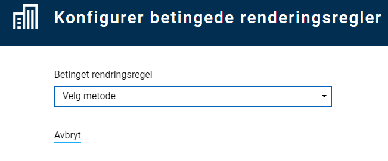
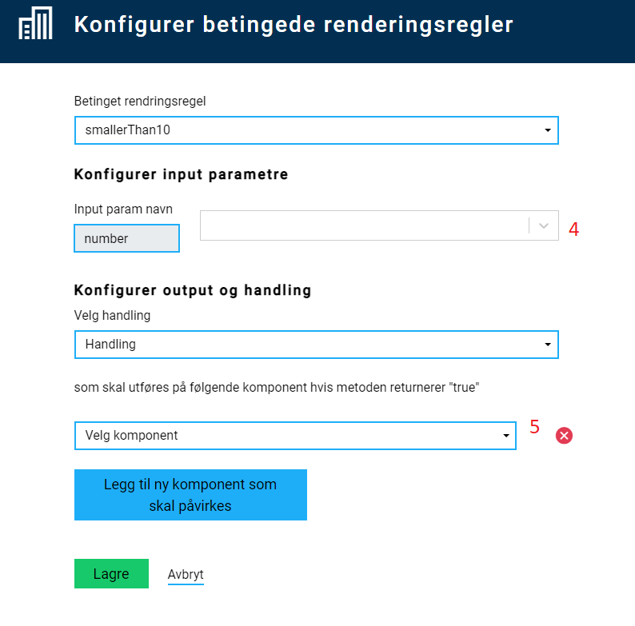

Dynamikk
Hvordan legge til dynamikk?
På denne siden:
Introduksjon
Dynamikk er hendelser som skjer på klient-siden. Disse kan deles opp i to kategorier:
- Beregning - kjøre beregninger på klient-side, og oppdatere felter med ny verdi
- Vis/skjul felter - bestemme om felter skal vises eller skjules basert på verdier i skjema.
Det er to måter å legge til og endre dynamikkregler for en Altinn App.
- Direkte i Altinn Studio under Lage-fanen. Velg Rediger dynamikk i høyre-menyen.
- I lokalt utviklingsmiljø ved å jobbe i filen
RuleHandler.jssom finnes iApp/ui-mappen .
All dynamikk skrives som funksjoner i JavaScript i RuleHandler-filen. Funksjonene som er definert i denne filen kan videre konfigureres til å kjøres for feltene i skjemaet.
Legg til/rediger funksjoner for beregninger eller vis/skjul
I filen RuleHandler.js er det satt opp 2 javascript-objekter:
ruleHandlerObject- funksjoner for beregningerconditionalRuleHandlerObject- funksjoner med regler for vis/skjul
Det er inne i disse at de forskjellige funksjonene skal defineres. I tillegg er det satt opp to hjelpe-objekter (ruleHandlerHelper og conditionalRuleHandlerHelper), hvor man skal sette opp hva slags input de forskjellige funksjonene forventer å få inn. Dette gjør det mulig å konfigurere opp reglene i Altinn Studio senere. For at en funksjon skal være tilgjengelig for å konfigureres som dynamikk, må selve funksjonen være definert i hoved-objektet
(ruleHandlerObject eller conditionalRuleHandlerObject), og parametrene den forventer å få inn må være satt opp i det tilhørende hjelpe-objektet.
Strukturen på hjelpe-objektet vises under:
var ruleHandlerHelper = {
<name_of_rule>: () => {
return {
<input_param>: "<description>",
<input_param>: "<description>",
<input_param>: "<description>"
...
};
}
}
Strukturen på hoved-objektet, som inneholder funksjoner som brukes i dynamikk, vises under:
var ruleHandlerObject = {
<name_of_rule>: (<input_variable_name>) => {
// Do something here
// Values from input parameters defined in
// helper can be accessed through the object passed
// into the rule, f.ex.
// <input_variable_name>.<input_param>
}
}
For eksempel, for å lage en regel som returnerer summen av to tall (beregning), vil man trenge følgende kode:
var ruleHandlerHelper = {
sum: () => {
return {
field1: "Field 1 in sum",
field2: "Field 2 in sum"
};
}
}
var ruleHandlerObject = {
sum: (data) => {
// Check if data is available
if (!data) return;
// Check if value from input fields are available
// If not, use value 0 in sum
data.field1 = data.field1 ? data.field1 : 0;
data.field2 = data.field2 ? data.field2 : 0;
// return the sum
return data.field1 + data.field2;
}
}
Noen standard-metoder for beregniner, med hjelpe-objekt, er satt opp automatisk når app’en lages i Altinn Studio. Noen av disse er vist i eksempelet under.
| Method name | Description | Parameters | Defined in object/helper |
|---|---|---|---|
sum |
Returnerer summen av 2 verdier | value1, value2 |
ruleHandlerObject/ruleHandlerHelper |
fullName |
Returnerer to tekster (fornavn og etternavn) satt sammen med mellomrom mellom. | firstName, lastName |
ruleHandlerObject/ruleHandlerHelper |
lengthBiggerThan4 |
Returnerer true dersom verdien den får inn er lengre enn 4 karakterer lang. |
value |
conditionalRuleHandlerObject/conditionalRuleHandlerHelper |
Regler for dynamikk kjøres dersom det har skjedd en endring i input-parametrene til de forskjellige reglene. Funksjonene som da kjøres må kunne håndtere dersom det f.eks. har kommet inn kun 1 av 2 parametre eller lignende.
Et eksempel på hvordan dette kan gjøres er vist i sum-funksjonen under, hvor man tester hvilke parametre man
har fått inn, og setter verdi til 0 på den/de parametre som mangler, sånn at regelen fortsatt fungerer.
var ruleHandlerObject = {
sum: (obj) => {
obj.value1 = obj.value1 ? +obj.value1 : 0;
obj.value2 = obj.value2 ? +obj.value2 : 0;
return obj.value1 + obj.value2;
},
fullName: (obj) => {
return obj.firstName + ' ' + obj.lastName;
}
}
var ruleHandlerHelper = {
sum: () => {
return {
value1: "Value 1",
value2: "Value 2"
}
},
fullName: () => {
return {
firstName: "First name",
lastName: "Last name"
};
}
}
var conditionalRuleHandlerObject = {
lengthBiggerThan4: (obj) => {
if (obj.value == null) return false;
return obj.value.length >= 4;
}
}
var conditionalRuleHandlerHelper = {
lengthBiggerThan4: () => {
return {
value: "value"
}
}
}
Konfigurere dynamikk for skjema-komponenter
- Legg til de skjema-komponentene som ønskes i layout.
- I høyre-menyen, velg å legge til Regler for beregninger eller Regler for vis/skjul felt.

- Velg en tilgjengelig funksjon som gjør det du ønsker. Legg evt. til en ny funksjon, se beskrivelse over. 
- Sett opp hvilke(t) felt som skal fungere som input til funksjonen - her er det felt i datamodellen som gjelder. 
- Sett opp hvilke(t) felt som skal påvirkes av regelen (skal motta beregnet verdi, eller skal vises/skjules) - her er det skjemakomponent som gjelder.
- For regler for vis/skjul felt kan man velge flere felter som skal vises/skjules basert på samme regel.
- Lagre konfigurasjonen.
- Test at det fungerer som forventet.
Eksisterende oppsett ligger synlig i høyre-menyen og kan redigeres/slettes.
Konfigurasjonen legges i filen App/ui/RuleConfiguration.json. Denne kan også redigeres manuelt ved behov.
Eksempel på bruk av dynamikk i skjema
Scenario:
En app med skjema som har flere felter for input. En av disse er en radioknapp-gruppe, med valgene “Ja” og “Nei”. Avhengig av hva sluttbruker velger her, skal forskjellig innhold vises i skjemaet:
- Ja: Et nytt input-felt vises, sammen med ekstra informasjon om hvordan feltet skal fylles ut.
- Nei: En annen informasjons-tekst vises.
Dette kan gjøres ved å legge inn følgende i RuleHandler.js, enten via Rediger dynamikk i Altinn Studio, eller ved å laste ned kildekoden
til appen og redigere lokalt.
var conditionalRuleHandlerObject = {
sjekkVirksomhetIDrift: (obj) => {
return (obj.value && obj.value === "Ja");
},
sjekkVirksomhetIkkeIDrift: (obj) => {
return (!obj.value || obj.value != "Ja");
}
}
var conditionalRuleHandlerHelper = {
sjekkVirksomhetIDrift: () => {
return {
value: "Verdi"
}
},
sjekkVirksomhetIkkeIDrift: () => {
return {
value: "Verdi"
}
}
}
Her har to funksjoner blitt opprettet, som sjekker om verdien er henholdsvis “Ja” eller ikke. Etter at denne koden er lagt til, kan regelen konfigureres i Altinn Studio. Resultatet vises under.

Test of dynamics example
Dynamikk i repeterende gruppe
Det er også mulig å sette opp dynamikk innad i en repeterende gruppe. Dette krever at man først setter opp regelen som
vanlig, og så redigerer på oppsettet App/ui/RuleConfiguration.json manuelt. Helt konkret, er det følgende som må endres:
- For alle
inputParams, må man legge til{0}etter gruppe-delen av data-modellen. F.eks.Datamodell.gruppe{0}.felt. Dette erstattes i koden av indeksen til hvert enkelt innslag av den repeterende gruppen. - For alle
selectedFields(altså feltene som påvirkes av reglen), må man legge til{0}bak felt-id’en. F.eks.skjemaFelt1{0} - I tillegg må man legge enn en ny egenskap på regelen,
repeatingGroup. Denne skal inneholde id’en til gruppen i layout-filen.
Et eksempel på en regel som er satt opp for repeterende grupper vises under:
{
"data": {
"ruleConnection": {},
"conditionalRendering": {
"9f9f2a50-360b-11ea-b69a-8510e2e248b9": {
"selectedFunction": "lengthBiggerThan4",
"inputParams": {
"value": "Skjemainnhold.personalia.arbeidserfaring{0}.stilling"
},
"selectedAction": "Show",
"selectedFields": {
"962e2f60-3797-11ea-bfa5-9922024b4738": "a-e-4{0}",
"something": "arbeidsgiver-adresse{0}"
},
"repeatingGroup": {
"groupId": "arbeidserfaring-group",
}
}
}
}
}
Nøstede repeterende grupper
Det er også mulig å sette opp dynamikk for nøstede repeterende grupper. Oppsettet likner på repeterende grupper, men man har med et ektra parameter childGroupId i repeatingGroup-objektet, samt en ekstra indeks-indikator.
Eksempel:
{
"data": {
"ruleConnection": {},
"conditionalRendering": {
"hide-nested-group-field": {
"selectedFunction": "shouldHide",
"inputParams": {
"value": "someGroup{0}.nestedGroup{1}.someField"
},
"selectedAction": "Hide",
"selectedFields": {
"field": "the-component-id{0}{1}"
},
"repeatingGroup": {
"groupId": "mainGroup",
"childGroupId": "subGroup"
}
}
}
}
}
Eksempel med mer kompleks dynamikk
Example with more complex dynamics
Scenario: Et skjema med to sett med radioknapper (ja/nei) og en avkrysningsboks.
- Når skjema lastes, er kun det første settet med radioknapper synlig.
- Hvis brukeren velder Ja, vises det andre settet med radioknapper.
- Hvis brukeren velger Ja i det andre settet, blir avkrysningsboksen synlig.
- Hvis brukeren går tilbake til det første settet med radioknapper og velger nei, blir både det andre settet med radioknapper og avkrysningsboksen ikke lenger synlig.
Alternativ 1
Dette kan settes opp ved å lage 2 forskjellige betingelser for når feltene skal vises:
- En betingelse for det andre settet med radioknapper
- Vises dersom Ja er valgt i det første settet
- En betingelse for avkrysningsboksen
- Vises når Ja er valgt i begge sett med radioknapper.
Koden for å løse dette kan være:
var conditionalRuleHandlerObject = {
showField2: (obj) => {
if (obj && obj.field1 && obj.field1=== "yes") {
return true;
}
return false;
},
showField3: (obj) => {
if (obj && obj.field1 && obj.field1 === "yes"
&& obj.field2 && obj.field2 === "yes") {
return true;
}
return false;
}
}
var conditionalRuleHandlerHelper = {
showField2: () => {
return {
field1: "Field 1"
};
},
showField3: () => {
return {
field1: "Field 1",
field2: "Field 2"
};
}
}
Alternativ 2
Dette kan også settes opp ved å bruke den samme betingelsen for å vise både det andre settet med radionkapper og avkrusningsboksen. I tillegg må man da ha en regel som sletter verdien i det andre settet med radioknapper dersom verdien i det første settet settes til Nei:
var ruleHandlerObject = {
clearField: (obj) => {
if (obj && obj.checkValue === "no") {
return "";
}
return obj.currentValue;
}
}
var ruleHandlerHelper = {
clearField: () => {
return {
checkValue: "check against this value",
currentValue: "the current value"
}
}
}
var conditionalRuleHandlerObject = {
showField: (obj) => {
if (obj && obj.checkField && obj.checkField === "yes") {
return true;
}
return false;
}
}
var conditionalRuleHandlerHelper = {
showField: () => {
return {
checkField: "check against this value"
};
}
}
Dynamikk i PDF
Fra versjon 3.0.0 er det også mulig å legge inn dynamikk for PDF. Dette gjøres i PDF Handler. Her kan man ved hjelp av logikk velge å skjulte felter eller sider i print.
Appen må inkludere ui/Settings.json filen som her.
Teknisk er det veldlig likt hvordan man gjør det for validering.
Eksempel nedenfor som skjuler et gitt felt basert på innhold. Komponentene er basert på ID som man finner i layouts filene til skjema.
public async Task<LayoutSettings> FormatPdf(LayoutSettings layoutSettings, object data)
{
if (data is Skjema)
{
Skjema skjema = (Skjema)data;
if (skjema?.Innledninggrp9342?.Kontaktinformasjongrp9344?.KontaktpersonNavndatadef2?.value.Contains("tulling") == true)
{
layoutSettings.Components = new Components();
layoutSettings.Components.ExcludeFromPdf = new System.Collections.Generic.List<string>();
layoutSettings.Components.ExcludeFromPdf.Add("079f205b-c9ea-414d-9983-0d158e833e8a");
}
}
return await Task.FromResult(layoutSettings);
}
```